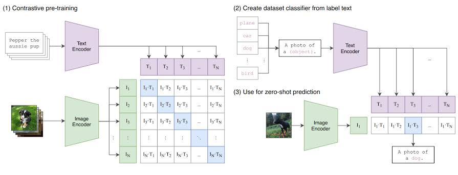
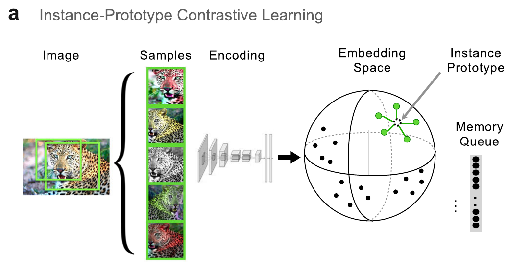
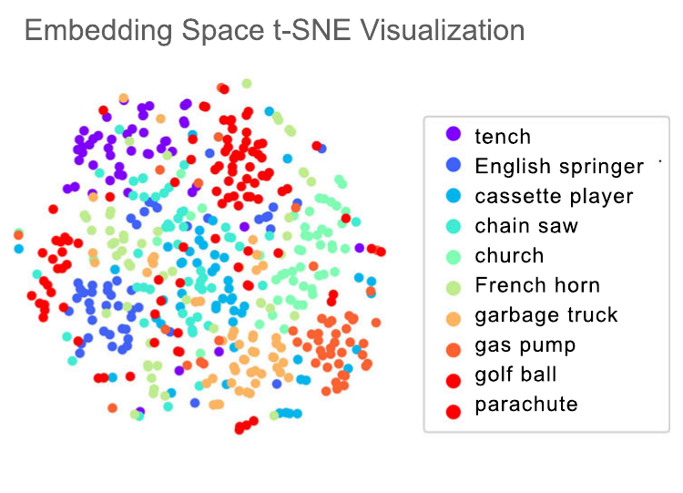
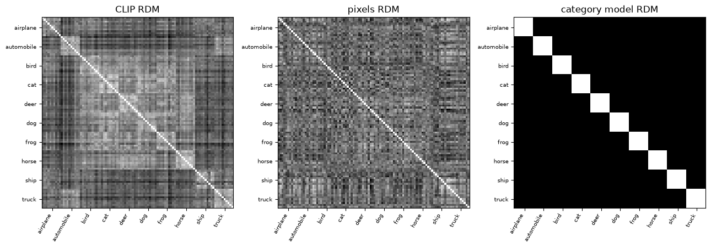
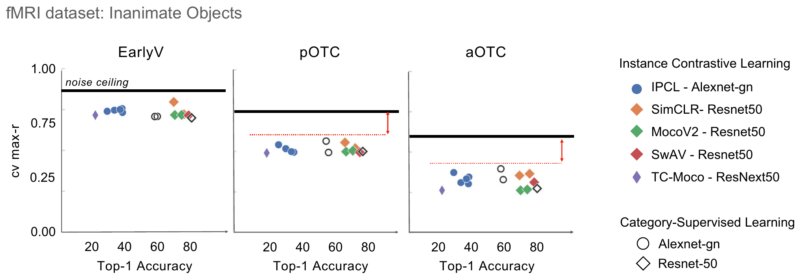

A label decides what is kept
Every network so far learned from labels. The ImageNet challenge set has about 1.28 million training images in 1,000 classes, and people labeled every one of them. A label is narrow. ImageNet’s thousand classes include about ninety dog breeds, so a network learns dog breeds whether or not that matters for anything else. There are vastly more images with no labels at all.
On a small set made of circles, squares, and triangles in four colors, a network trained to name the shape pulls the shapes apart and mixes the colors. A readout for color is then close to chance. Nothing in the labels asked for color, so the network threw it away. A representation that is good for one task can be bad for another.
Train the same network with no labels, and ask it only to squeeze each image into two numbers and rebuild the image. Color and shape both survive, though the specialist still wins its own task. Learn the structure first, and choose the task later. What comes out is an embedding: one vector per image, in a space where close means similar.
The views decide what is ignored
Contrastive learning makes two views of each image, pulls those two together, and pushes other images away. If the views are random crops, color is the easy thing the two views share, and a tiny network groups the images by color. Add random changes of hue, brightness, and saturation, and the same network regroups by shape. Whatever the views differ in, the embedding learns to ignore. Across six random starts the direction held; one run on the slide is cleaner than the average. Konkle and Alvarez trained with crops and color changes. What would their network be blind to?
CLIP: an image and a caption in one space

CLIP has two encoders. In the version in the lab, the image encoder is a Vision Transformer: an image in, 512 numbers out. The text encoder is a transformer over the words of a caption: a caption in, 512 numbers out. Both vectors are scaled to length one, so they live on the same sphere. An image and a caption that describe the same thing land close together. It never saw a class label. The two views are an image and its caption.
The optional lab uses ten CIFAR-10 images, 32 by 32, one from each class, and ten captions of the form “a photo of a …”. Similarity is the cosine of the angle. Because both vectors have length one, that cosine is the dot product. Every image against every caption is a 10 by 10 matrix. If CLIP works, the diagonal is strongest. In the run on the slides, with a different set of ten images, every image was still closest to its own caption. The cosines themselves sit in a narrow band, about 0.17 to 0.29, which is why a temperature matters.
The loss is the guessing game written as cross-entropy. Each row asks which caption belongs to this image. Divide the similarities by a temperature, softmax, and take minus the log of the true partner. Play it both ways and average. At temperature 0.01, the temperature CLIP itself learned, true pairs in that run had loss 0.28 and shifted pairs 6.59, against 2.30 for pure guessing, the log of ten. At temperature 1, all three sit near guessing. Small differences in cosine only count when the temperature is small.
Zero-shot classification writes the class names as captions and picks the closest one. On 500 CIFAR-10 test images the run scored 90.6%, against a chance of 10%, with no training on those classes. The words are part of the classifier: the bare class name scored 88%, and “a drawing of a …” scored 92%. Take a class away and its images still have to go somewhere. With cat deleted, 42 of 49 cat images went to dog. With truck deleted, 55 of 56 went to automobile. Zero-shot never says “none of these.”
The notebook is CLIP embeddings, in Colab.
Do categories have to be taught?
The later stages of the ventral stream carry a lot of information about object categories: faces, bodies, scenes, animals, objects. One account says category pressure shapes that organization. The other says it falls out of learning the structure of natural images. A CNN trained on ImageNet is not a clean test of the first account. Its labels are much finer than any theory proposes: three kinds of crab, ninety dog breeds.

Their test is a network that never sees a label. The model is instance-prototype contrastive learning. Five views of each image, random crops, rescaling, and color changes, go through an AlexNet into a 128-number embedding on the unit sphere. All five are pulled toward their average, the instance prototype, and pushed away from the embeddings of the 4,096 most recent images. The objective is to tell every image apart from every other image. Nothing in it mentions a category.

They then classify by nearest neighbors in that embedding, out of 1,000 classes, where chance is a tenth of a percent. An untrained network gets 3.5%. Their model gets 37.3% with no labels. The same network trained on the labels gets 58.8%. The labels still help. A lot of category structure appears without them.
In the lab the same idea is tested on CLIP, not on their network. A random crop keeps 40 to 100 percent of the image and is scaled back up. Each image gets five views. For every view, find the most similar other view. Twenty images and five views, so chance is about 4 out of 99, about 4%. In the run on the slides: crops 97%, color 94%, both together 86%. CLIP was never trained to do this. It comes along with matching images to captions. The notebook is Views and RSA, in Colab.
Comparing a network with the brain
A representational dissimilarity matrix records how different every pair of images is, for one representation. One minus the correlation of two embeddings is one such matrix. The same matrix from raw pixels has much less structure: two stripe images that are slightly shifted can look completely different as pixels. A hypothesis can be written the same way: same kind similar, different kinds different. That last matrix is a model, not a measurement. RSA correlates two matrices, pair by pair, with a rank correlation.
Konkle and Alvarez add a step before that comparison. Each voxel, a small cube of cortex, is fit as a weighted sum of the network’s units, with ridge regression, holding out one image at a time. The weights then predict voxel responses for images the fit never saw. RSA compares those predicted patterns with the measured ones. In 56 of 60 comparisons, the network trained without labels fit as well as, or not significantly worse than, the same network trained on the categories. Early layers fit early visual cortex best. Later layers fit the later regions.


For 72 inanimate objects, ImageNet accuracy ranges from 26% to 73%, and the brain fit does not rise with it. Being better at the benchmark did not make a model more brain-like. In anterior cortex a gap remains that none of them closes. Other visual diets, scenes, faces, mixtures, barely mattered, except that a diet of faces alone did worse on eight objects shown at five orientations, in the later regions.
Their own caveat. These networks are existence proofs, not models of the brain. They show what kind of representation can be learned from images alone. Their proposed goal is a compact code that tells every view of the world apart from every other. They chose the views by hand. A model trained on video from head cameras worn by young children did not close the gap either. They point to learning over time, from video, as the open frontier.
After class
The general idea is due Saturday night, on the form linked from the course page: a working title, one sentence with no jargon, which track, who would care, and what images you would use. The ideas are shared with the class so people can find teammates. The detailed proposal is due Tuesday night, one to two pages from the template: the problem, the approach, how you will know it works, and a plan for the time you have.
Finish the labs you do not reach in class: the language-model fine-tuning lab from MIT 6.S191, the CLIP embeddings notebook, and the views and RSA notebook. The readings named on the slide are Vision Book Chapter 26, Transformers, and Chapter 30, Representation learning.